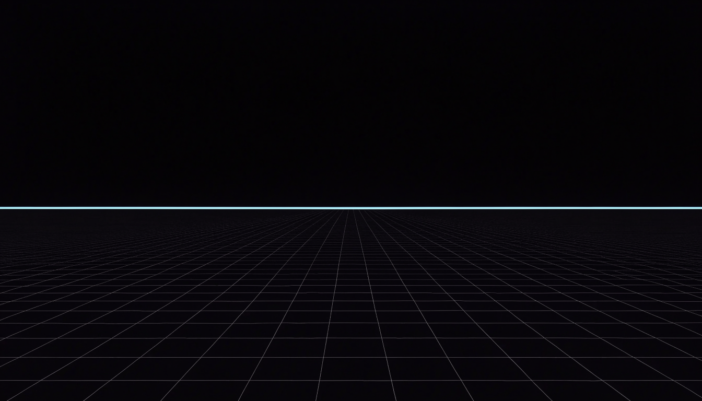
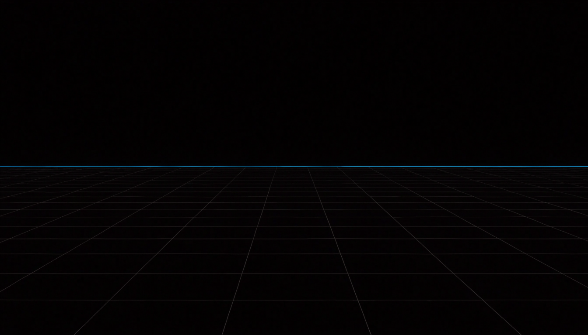
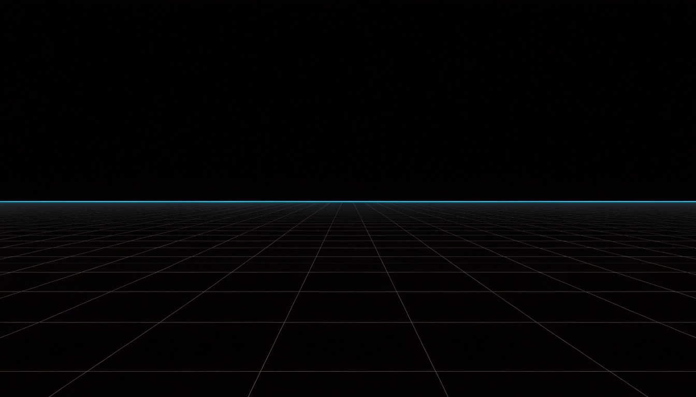
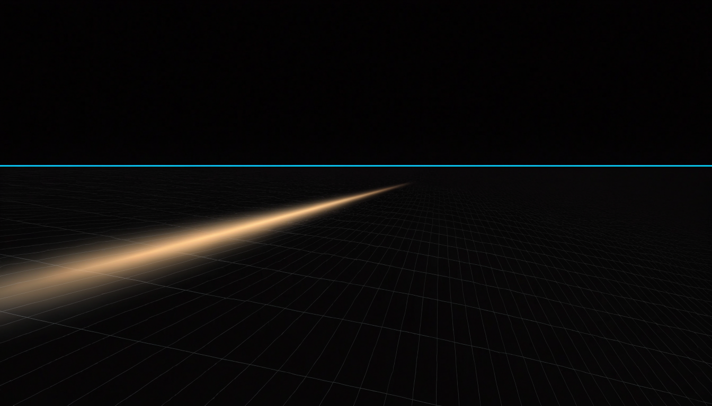
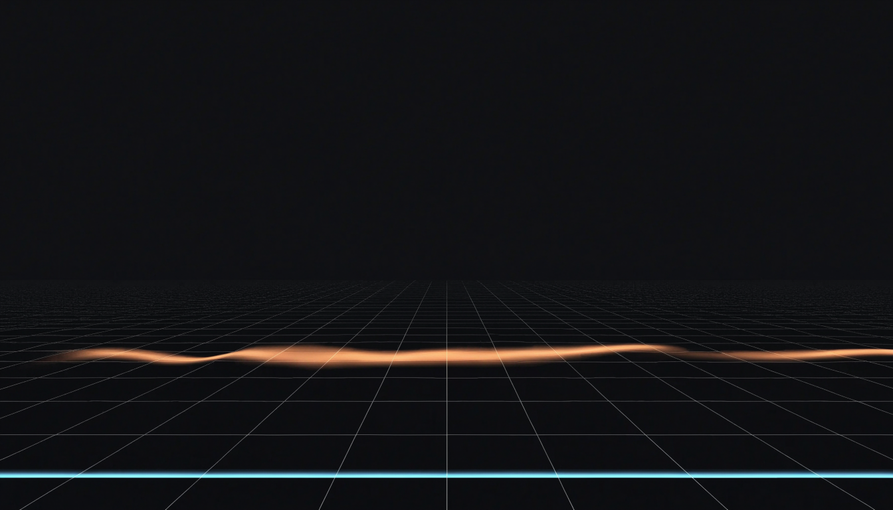
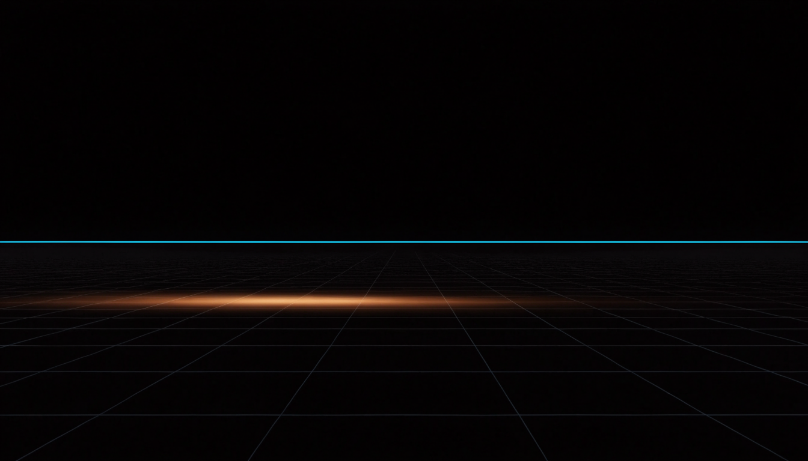
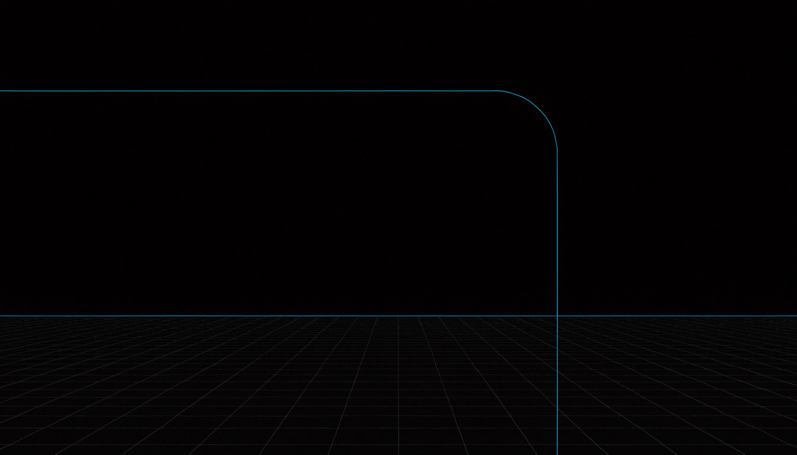
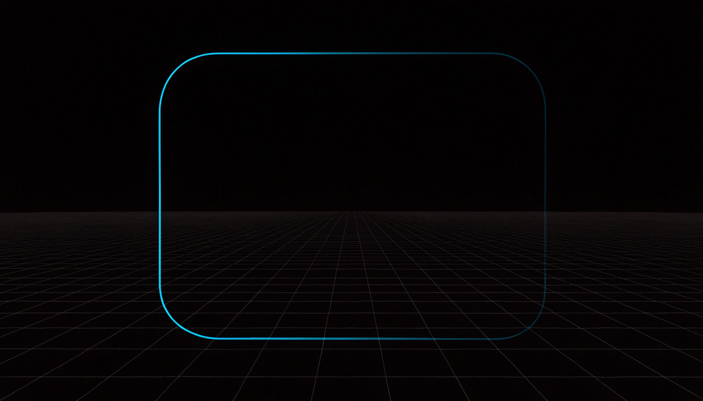
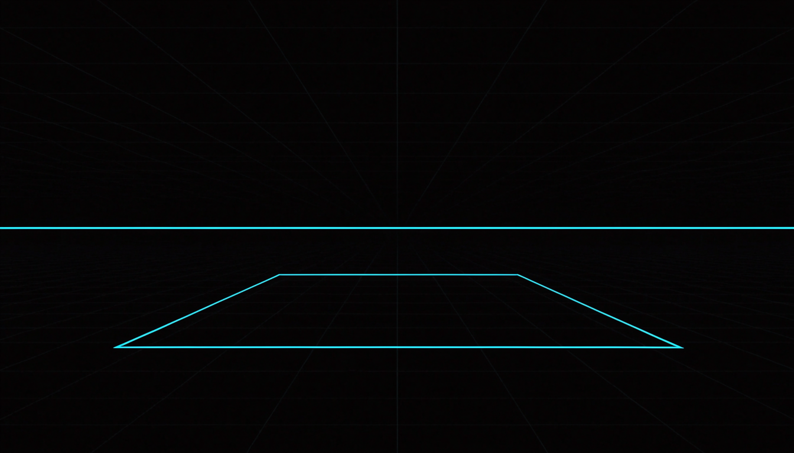

01Chat to card
Sebastian asks in the chat for a queue when a co-op lobby is full. The agent asks one question, proposes the card, and the card lands on the board.
desk viewport, 19.9 s, 6 steps
The real console, recorded over a scripted fake project, the browser game Nebula Run. Every scene is a short story with a video and the frames of its steps. demo/run.sh regenerates the bank and this page.
Click a frame to open it full size. The video plays in place.
Sebastian asks in the chat for a queue when a co-op lobby is full. The agent asks one question, proposes the card, and the card lands on the board.
desk viewport, 19.9 s, 6 steps
Sebastian says matchmaking feels slow. The agent reads the telemetry's alerts by tool, names the p95 of GET /match and files a card with the bar in its acceptance.
desk viewport, 15.1 s, 4 steps
Sebastian asks for level 4, the asteroid belt. The agent files it in the plan lane, the planner's four cards wait for his accept, and once accepted they land on the board in their order.
desk viewport, 35.4 s, 10 steps
Sebastian files a card by hand through the New task form: title, description, lane and size, filed; the card lands on the board.
desk viewport, 22.8 s, 5 steps
The lobby queue request of the chat, on the phone: the agent asks, Sebastian presses a choice and Do it, the card lands on the board.
phone viewport, 19.9 s, 6 steps
One afternoon in one frame: three cards need Sebastian, one waits on another, five build and six are done, and the chat holds the agent's proposal to steer the refund. He answers the season pass's question on its card with one click. The board drains one card at a time as the work resolves. Then new work comes in on its own, a nightly scan, an alert and a user's issue, and one sentence in the chat becomes the plan for level 5, whose four cards land on the board once he accepts it.
desk viewport, 84.1 s, 29 steps
A card filed by hand starts: it waits in the queue, builds with the drawer on the agent's words, opens its pull request, passes the checks and the review, and is done.
desk viewport, 28.8 s, 6 steps
The stronger model's review finds a race in the leave card's pull request: two users leaving at once. The finding goes back to the agent, the second session frees the seat under a lock, and the review passes.
desk viewport, 22.4 s, 4 steps
The daily challenge card's session runs the same failing test three times, flipping its code back and forth. The flip-flop detector trips, the supervisor ends the session, and the next one starts from its insight.
desk viewport, 24.3 s, 4 steps
The season pass and the profile's past runs build at the same time. Each opens its pull request, passes its checks and review, and both merge.
desk viewport, 19.9 s, 5 steps
The receipt card's first attempt on the small class fails the acceptance job. The second attempt runs on the big class, and the drawer shows the model and the spend change.
desk viewport, 29.8 s, 6 steps
Sebastian tells the refund card in the chat how to key its Stripe refunds. The agent proposes the message, he presses Do it, and the running session's transcript shows it arrive and the agent take it.
desk viewport, 21.5 s, 4 steps
Sebastian opens the refund card's session, then asks the chat to find out who builds the refund and pass on a line, naming no card. The project agent reads the board, finds #122, proposes the message, he presses Do it, and the line arrives in the running session.
desk viewport, 24.2 s, 4 steps
The lobby queue merges out of the merge queue, the drawer shows the merge and its chain going live, the settings show both environments ready, and the week's deploys count one more.
desk viewport, 32.8 s, 8 steps
Minutes after the ship filter goes live, the leaderboard answers 500 and the chat's alerts show it, beside the merge's commit. The factory files the fix from the alert, the fix goes live and the alert settles.
desk viewport, 34.1 s, 6 steps
The store answers 500 after the Stripe webhook change. The card the factory files carries the stack trace, the agent fixes the line it names, the fix goes live and the alert settles.
desk viewport, 25.5 s, 5 steps
A user reports a missing receipt as an issue. Sebastian has the agent file the fix card from it, the fix merges and closes the report, and the fix card's drawer names the report it came from.
desk viewport, 27.1 s, 5 steps
The nightly security scan finds a vulnerable dependency and files the bump card; the scan's runs and the card's gates show it build, pass its gates and go live within the hour.
desk viewport, 23.8 s, 4 steps
The weekly performance read finds the leaderboard's p95 up from 0.31 s to 0.74 s since the ship filter and files a card with the numbers.
desk viewport, 14.7 s, 3 steps
The inbox holds what happened since Sebastian last looked: merges gone live and the night scan's filing; read, each folds to one settled line, nothing waits on Sebastian, and only an ask would have reached his phone.
desk viewport, 17.2 s, 4 steps
The routines wait in Queued with their next runs; the weekly bump waits on Sebastian, and he skips the next performance read once. The bump's drawer lists its runs and the cards they filed.
desk viewport, 20.7 s, 4 steps
A developer files an issue with a repro block on the repository; the webhook files the card within a minute, the agent reproduces the fault and fixes it, the reproduction gate runs the issue's command red at the base and green at the head, and the fix merges with no human in between.
desk viewport, 37.9 s, 8 steps
Sebastian asks the chat in one short sentence for a weekly bump of the game's base images. The project agent proposes the routine, he presses Do it, and it waits in Queued as a dashed card with its next run. On its day it comes due and files a card, the card builds and ends done, and the routine waits for the next week.
desk viewport, 31.3 s, 5 steps
Level 4's map card stops overnight at its budget, and the factory asks whether to fund one more session. Sebastian splits it in the chat instead: the agent files the map and the enemy waves as two small cards, points the boss card at the waves and closes the map card.
desk viewport, 32.7 s, 8 steps
The map card's session asks which map editor to build on, with three choices. Sebastian answers in the chat, and the card's next session builds on his pick.
desk viewport, 14.6 s, 3 steps
The refund card touches payments, so its pull request waits for Sebastian at the merge gate. He reads the summary, the review and the changed files in the drawer, opens the pull request in Forgejo, approves, and the card merges and goes live.
desk viewport, 37.8 s, 7 steps
Three cards filed overnight each asked one question and waited. In the morning Sebastian answers all three on the board, and the cards take their slots and start building.
desk viewport, 22.1 s, 4 steps
The morning's three questions on the phone: Sebastian answers each on its card, and the cards take their slots and start building.
phone viewport, 22.2 s, 4 steps
One card at two levels. At manual the replay's share link waits twice for Sebastian: on its question and at the merge gate. At full auto the same card runs through: the agent's wake turn answers the question from the challenge notice's file, and the card merges on the merge rule without stopping at the gate.
desk viewport, 27.6 s, 6 steps
At full auto a card stops at its budget: €0.40 left, and a session on big needs €0.60. The factory wakes the project agent, which reads the card and funds one more session from the project's monthly pool, inside its raise limit. The card goes on, and nobody was asked about sixty cents.
desk viewport, 15.9 s, 3 steps
The metrics page reads the second week against the first: deploys, lead time, cost per card, tool spend and the escalations.
desk viewport, 15.9 s, 5 steps
The metrics page a week apart, each week 310 cards, most of them the quiet work of routines and the intake: after level 4's split into small cards the week costs less, and the morning's questions raise the escalations to 13, 4 % of the cards.
desk viewport, 22.1 s, 6 steps
The costs page over the two weeks: each day by kind, model and tool, then each card and its lines. The costliest card is level 4's map, which stopped at its budget.
desk viewport, 14.2 s, 4 steps
Signals feed the control plane, which spawns agent workers in sandboxes; their output passes verification before merge and deploy, and telemetry feeds back into signals.
desk viewport, 11.7 s, 6 steps
A change passes chat, spec, plan, build, review, merge, deploy and telemetry; each gate says what it checks, the human confirms the spec, and the project's merge rule decides who merges.
desk viewport, 15.4 s, 8 steps
A failure climbs from the agent's self-correction through the stronger model, the check-in and a fresh session to the human, who gets a prepared question.
desk viewport, 9.9 s, 5 steps
Card #101 gets its namespace, a read token on the repository, a write token on the bot's fork, its model key and its sandbox pod; they clone, push and call the model; then the pod and the namespace are deleted, the tokens revoked, and the field is empty.
desk viewport, 13.6 s, 7 steps
The theory first: which decisions stay with you at each autonomy level. Then the console: on manual a payments merge waits and is approved by hand, and the card moves on merged. The dial stands on manual with only its dim lamp lit; its menu opens, one click picks full auto, and the chip shows only the full auto lamp, the brightest. The agent then answers the next card's question from the code, and the card merges and goes live without anyone.
59.6 s at 30/1 fps, 15 frames shown, rendered with hyperframes@0.8.183 in 77 s, two renders frame for frame identical, source video/clip-dial/index.html
The theory first: the rungs a card climbs, from the cheap model through check-ins and the stronger model to a human at the caps. Then the console: the receipt card's first session on the cheap model fails its acceptance check, and the next session runs on the stronger model.
56.3 s at 30/1 fps, 15 frames shown, rendered with hyperframes@0.8.183 in 76 s, two renders frame for frame identical, source video/clip-ladder/index.html
The theory first: one sentence becomes a plan card, the planner writes its cards in build order, and they land on accept. Then the console: the plan card waits in Needs you, it opens like any card, its question is answered, a click accepts it, and its four cards land.
50.5 s at 30/1 fps, 13 frames shown, rendered with hyperframes@0.8.183 in 68 s, two renders frame for frame identical, source video/clip-plan/index.html
The theory first: a card that cannot pay for one more session asks. At manual and assisted you decide. You set a small monthly pool for overruns, and at autonomous and full auto the project agent may fund a small need from it; anything bigger still reaches you. Then the console: a card stops at €0.40, the factory wakes the agent, it funds €0.60 from the pool, and the card goes on.
47.2 s at 30/1 fps, 12 frames shown, rendered with hyperframes@0.8.183 in 65 s, two renders frame for frame identical, source video/clip-pool/index.html
One short sentence in the chat asks for a weekly image bump. The agent proposes a weekly routine, and once approved it waits in Queued as a dashed card. On its day it comes due, files card #141, the card runs like any other and is done, and the dashed card waits for the next week.
31.8 s at 30/1 fps, 8 frames shown, rendered with hyperframes@0.8.183 in 52 s, two renders frame for frame identical, source video/clip-routine/index.html
The theory first: the many checks the factory runs on every session and the measures that follow. Then the console: a session goes in circles on a date bug, a detector trips, the supervisor redirects, and the next session starts from what it learned.
52.3 s at 30/1 fps, 14 frames shown, rendered with hyperframes@0.8.183 in 70 s, two renders frame for frame identical, source video/clip-stall/index.html
You look for the card that builds a feature, here the refund. Without naming a card, a line goes into the main chat: find who builds the refund and tell them how to key it. The project agent reads the board, finds #122, a click sends the line, and it arrives in the running session. The moral: the chat writes no code, it orchestrates development for you.
29.1 s at 30/1 fps, 8 frames shown, rendered with hyperframes@0.8.183 in 41 s, two renders frame for frame identical, source video/clip-steer/index.html
A matrix of six decisions against the four autonomy levels. A dial moves from manual to full auto one level at a time, and the cells that change flip from you to agent one row at a time: assisted lets the agent start and file ready cards, autonomous lets it answer its questions and steer, split or close cards, full auto lets a card merge once its gates pass. Two rows stay with the person at every level.
25.9 s at 30/1 fps, 7 frames shown, rendered with hyperframes@0.8.183 in 34 s, two renders frame for frame identical, source video/diagram-dial/index.html
Seven rungs appear from the bottom up, each lit as it is reached: a session on the cheap model; a nudge into the live session; a check-in where the stronger model answers go on, guidance or a handover; the stronger model takes over in the same session; a new session from the pushed work and a handover note; the caps (three sessions per card, two hours of agent time, twelve check-in calls, a budget floor); and at the top a human in Needs you, who chooses Grant one session, Leave it waiting or End the card.
27.4 s at 30/1 fps, 7 frames shown, rendered with hyperframes@0.8.183 in 36 s, two renders frame for frame identical, source video/diagram-ladder/index.html
You type one sentence into the chat. The project agent answers that this is several cards and files one plan card in the board's plan lane. The planner, a model run on that card, writes a plan of four cards in build order: rock-physics first, belt-map and mining-drone side by side, belt-boss last, with the dependency arrows, and a question for you. The plan card moves to Needs you and waits for the accept. On accept its four cards land in Queued, each waiting for the cards it depends on.
25.9 s at 30/1 fps, 7 frames shown, rendered with hyperframes@0.8.183 in 33 s, two renders frame for frame identical, source video/diagram-plan/index.html
A card has a budget of 5.00 euro with 4.60 spent. A session on the big model needs 0.60, so the card stops and asks: Fund one more session? At manual and assisted the ask goes to you in Needs you. At autonomous and full auto the project agent wakes first. You set a small monthly pool for overruns (10 euro a month). 0.60 is small, so the agent funds one more session from the pool. A raise of 4.00 is too big for the agent: it reaches you with the agent's analysis.
27.9 s at 30/1 fps, 7 frames shown, rendered with hyperframes@0.8.183 in 34 s, two renders frame for frame identical, source video/diagram-pool/index.html
An agent session with a faint live feed sits at the top left. The factory checks it every few seconds. Three groups of detectors appear one at a time and each chip lights as it is named: no output (no events for 5 minutes, no file written in 15 minutes of work, no file changed in 60 tool calls), going in circles (the same call 4 times, the same command failing the same way 3 times, a file flipping back or a fixed check failing again, 15 file changes with no check newly passing) and money and time (60 percent of the budget spent with nothing pushed, a check-in every 45 minutes of agent time, 2 hours of agent time in all). Then a tripped check makes the factory act, each step stronger up to a human; 2 hours of agent time end any session; every stop lands in Needs you with a question.
29.6 s at 30/1 fps, 8 frames shown, rendered with hyperframes@0.8.183 in 36 s, two renders frame for frame identical, source video/diagram-stall/index.html
The whole film in the spotlight style: the hero frame and its three points, the split, the board draining as work resolves, new work filing itself, one sentence becoming a plan whose four cards land, a merge approved by hand, the dial at full auto, the supervisor after a stall, a question only Sebastian answers, the delivery metrics, the sandbox, the closing line. Captions only, no voice.
185.2 s at 30/1 fps, 47 frames shown, rendered with hyperframes@0.8.183 in 251 s, two renders frame for frame identical, source video/film-a/index.html
Three bands: your servers, your process, your prompts. The factory's parts take their places in the bottom band, the process file's stage list slides in beside the middle band, the prompt files appear in the top band, and the harness box in a sandbox lifts out of its one interface and drops back in.
24.0 s at 30/1 fps, 6 frames shown, rendered with hyperframes@0.8.183 in 34 s, two renders frame for frame identical, source video/layers/index.html
The five planes appear in turn, the wires draw themselves and close the ring, then a card runs the loop twice: a signal in, work in the sandboxes, verification, a merge, the telemetry back. Rendered from HTML and a GSAP timeline, frame by frame.
30.0 s at 30/1 fps, 8 frames shown, rendered with hyperframes@0.8.183 in 39 s, two renders frame for frame identical, source video/loop/index.html
The factory sends a card into one throwaway pod: gVisor, non-root, read-only root, no service account token. A probe tries the internet, the host machine and the cloud metadata address, one after the other, each crossed out, and only named hosts are open. The model gateway then appears with the keys, then the card's budget meter: a call is held at its worst case, sent, and booked at its real cost. The pod holds a one-hour gateway identity, no push token and no model key. More calls fill the budget to its cap, the factory stops and a human decides: fund it or end it. At the end the factory ticks off its list one step at a time: kill the agent's processes, mint a write token, push once, revoke it, delete the pod. Only the element the caption names is bright; everything shown before settles to muted; the picture holds one second and fades out.
56.5 s at 30/1 fps, 15 frames shown, rendered with hyperframes@0.8.183 in 62 s, two renders frame for frame identical, source video/sandbox-a/index.html
The factory sends a card in and three walls close around the agent, one at a time, each with the attempt it blocks: a write to the root filesystem stops at the pod wall, a call into the host's kernel at gVisor, and the probe's tries at the internet, the host machine and the metadata address at the network policy; only named hosts pass the gate. The model gateway then sits in that gate with the keys and the budget meter: a call is held at its worst case, sent and booked at its real cost. The agent holds a one-hour gateway identity, no push token and no model key. More calls fill the budget to its cap and a human decides; at the end the factory kills the agent's processes, mints a write token, pushes once, revokes it and deletes the pod as the walls fold away. Only the element the caption names is bright; the picture holds one second and fades out.
56.6 s at 30/1 fps, 15 frames shown, rendered with hyperframes@0.8.183 in 62 s, two renders frame for frame identical, source video/sandbox-c/index.html
A sequence diagram whose lanes appear as they are first used: a person, the factory, the pod with the agent, the model gateway, the model API and the repository. Rows draw one at a time, each lit while its caption speaks and muted after: the factory starts a throwaway pod (gVisor, non-root, read-only root, no service account token); the probe's tries at the internet, the host and the metadata address stop at a cross while a named host is open; a model call goes to the gateway, held at its worst case, sent with the gateway's key and booked at its real cost; the pod holds a one-hour gateway identity and never a push token or model key; at the cap the gateway refuses, the factory asks the person, who funds it; at the end the factory kills the agent's processes, mints a write token, pushes once, revokes it and deletes the pod. The picture holds one second and fades out.
65.8 s at 30/1 fps, 17 frames shown, rendered with hyperframes@0.8.183 in 70 s, two renders frame for frame identical, source video/sandbox-d/index.html
One card runs, then is done.
desk viewport, 4.4 s, 2 steps
Made with the fal models of the plan by tools/img.py: the stills went wide, Gemini judged the contact sheet, the director picked provisionally, one take per clip. Every output has its sidecar JSON beside it. About $2.88 of the $10 cap. The plan: demo/generated/PLAN.md.
4 stills, 1 take, ~$0.53
33 the opening: the loop, take 1 from still 2: minimax/h3-max/image-to-video, ~$0.30
the contact sheet the critic judged
1. The ranking is 2, 4, 3, 1. Animate **Still 2**. It is the only candidate with five stations, which best suits the motion prompt’s logic of a transfer from the first to the last panel. Its composition is dynamic and adheres to the specified look without any defects. 2. Defects the motion prompt cannot fix: Still 4 has markings on a gauge that are borderline text. Stills 1, 3, and 4 have six stations, which misaligns with the five-step process implied by the prompt. Still 1’s composition is too flat to read well at a glance. 3. Yes, Still 2 clearly reads as a closed loop of five stations. 4. No, the eye will follow two elements: the moving cyan trace and the shifting amber glow. Since the amber glow represents “the one thing that matters,” its disappearance and reappearance will be a primary focus, competing with the cyan trace for attention.
4 stills, 1 take, ~$0.53
34 the sandbox life cycle, take 1 from still 1: minimax/h3-max/image-to-video, ~$0.30
the contact sheet the critic judged
1. **Rank: 1, 2, 4, 3. Animate still 1.** Its sharp, isometric composition reads best as a technical console display. The token and key are clear and distinct. Unlike 2, its composition is balanced and direct, and unlike 3 and 4, it lacks a glow, allowing the motion prompt to generate it cleanly.
2. The unfixable defect is the static glow in stills 3 and 4. The motion prompt specifies the glow as an animated event ("pulses twice"). Starting with a pre-existing glow creates a visual contradiction that the motion prompt cannot fix. All stills are otherwise on-palette and compositionally sound.
3. Yes, the end state will be clear. The prompt explicitly says the elements "dissolve into the dark grid, leaving the field empty." Yes, the token and key are readable as two distinct things. Their high-contrast colors (cyan vs. amber) and simple versus complex shapes ensure they are immediately distinguishable, even as small elements on screen.4 stills, 1 take, ~$0.53
35 the wipe and re-seed, take 1 from still 1: minimax/h3-max/image-to-video, ~$0.30
the contact sheet the critic judged
1. **Ranking:** The best option is 1, followed by 2, 3, and 4. 2. **Recommendation:** Animate still 1. Its low camera angle creates the most cinematic and powerful composition, making the blocks feel monumental. This best fits the “AI factory” theme and will make the “crumble and rise” animation feel more significant and dramatic. 3. **Unfixable Defects:** The motion prompt cannot fix the weaker compositions of stills 3 and 4. Their higher camera angle makes the scene feel flat and diminishes the blocks' sense of scale, a flaw inherent to the still image. All four stills correctly adhere to the specified palette and are free of text or people. 4. **Clarity for Rebuild:** Yes, the relationship between the three blocks and the single seed point is perfectly clear in all options. The simple, symmetrical arrangement is strong and unambiguous. A rebuild landing the new blocks in the exact same positions will clearly read as a replacement or regeneration of the same cluster.
9 stills, 3 takes, ~$1.29
36a title loop: the horizon, take 1 from still a3: pixelcut/looping-video, ~$0.40
36b title loop: the amber pulse, take 1 from still b3: pixelcut/looping-video, ~$0.40
36c title loop: the panel trace, take 1 from still c2: pixelcut/looping-video, ~$0.40

36a-1
36a-2
36a-3
36b-1
36b-2
36b-3
36c-1
36c-2
36c-3the contact sheet the critic judged
**Row a: Grid with cyan horizon** Still a3 is the best choice. Its composition is the most stable and cinematic, with a classic perspective grid that converges naturally toward the horizon. This structure will powerfully complement the specified ‘slow drift toward the camera’ motion, creating a sense of infinite, orderly space. It provides a clean, uncluttered field that is ideal for overlaying a white title without distraction. In contrast, a1’s perspective is slightly less engaging, and a2 has a minor defect: its background is a dark grey rather than the required near-black, which deviates from the specified palette and a looping video model cannot fix a base colour. Still a3 has no defects. **Row b: Grid with amber pulse** Still b3 is the strongest candidate. It most effectively interprets the brief’s ‘soft amber pulse crossing.’ The horizontal, scanner-like glow is clean and technological, aligning perfectly with the ‘factory console’ aesthetic. Its soft edges create a sense of energy without being distracting, leaving ample negative space for titles above and below. The motion of the grid drifting through this static pulse will be visually compelling. A loop cannot fix the core concept of the other stills. Still b1’s pulse is a sharp, directional vector, which feels more like data transmission than a soft pulse. Still b2 is unusable as its background is a distinct grey, violating the ‘near-black field’ palette. **Row c: Grid with cyan rectangle** Still c2 is the only viable option. It is the only frame that depicts the ‘thin cyan trace drawing a 16:9 rectangle in the centre’ as a complete, balanced element. Its centered composition creates a clear focal area, acting as a natural frame for a title card or as a ‘monitor’ within the console interface. A looping animation starting and ending on this resolved state would be clean and purposeful. The loop cannot fix the fundamental defects in the other stills. Still c1 is an incomplete, unbalanced crop of the rectangle. More critically, still c3 depicts a trapezoid, which is the wrong geometric shape entirely and fails the brief’s core requirement for this element.
demo/run.sh # the whole bank demo/run.sh 01-chat-to-card # one scene node --test demo/test/*.test.js # the tests
A fresh session needs Node 22; Playwright's Node modules at NODE_PATH (default /tmp/claude-1000/pw/node_modules, a path a reboot can wipe; install with npm i playwright in that directory) and Chromium under PLAYWRIGHT_BROWSERS_PATH (default ~/.cache/ms-playwright; npx playwright install chromium); ffmpeg with ffprobe; Go for the lab; and the code repository at CODE_REPO (default /home/womb/repos/ai-software-factory-code).